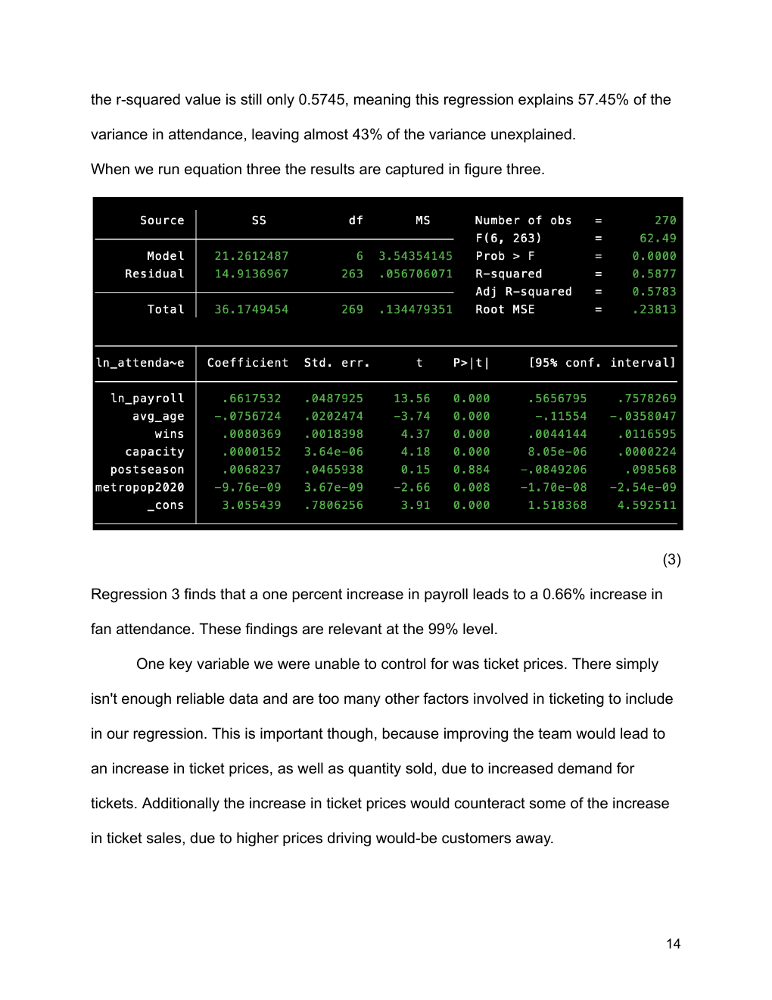
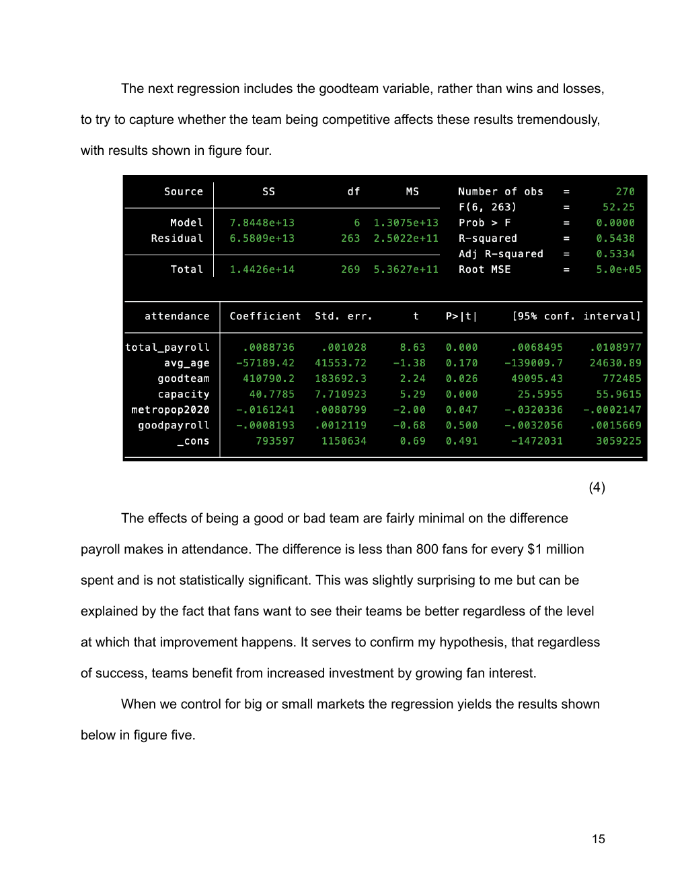

A multivariable regression study of MLB payroll and attendance using team and market controls.
Does higher payroll spending correspond to higher attendance after accounting for other observable factors that may affect demand?


The study uses MLB data from 2015–2025 while excluding 2020, and controls for wins, postseason appearance, stadium capacity, metropolitan population, and roster age. The analysis interprets coefficient size, statistical significance, model fit, and limitations.